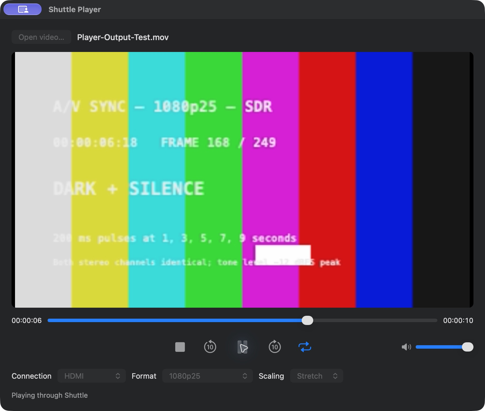

Play movie files with stereo sound through the Blackmagic Intensity Shuttle USB 3.0. A separate companion app to Shuttle Camera.

The centred icon row contains Stop, Back 10 seconds, Play/Pause, Forward 10 seconds and Loop. Loop turns blue when enabled. Hover over an icon for its name. The volume slider sits at the right; the scrub bar stays above the controls.
Stretch is the default. It scales the whole movie to fill the output frame, including when the source has a different aspect ratio. This can change proportions. Fit retains proportions with black bars; Fill retains proportions and crops the edges.
Seeking is decoded in the background so the USB sender can hold the previous picture with silence while the new frame loads. Pause holds the picture and sends silence. Scrubbing while paused updates the held picture. Dragging during playback temporarily pauses, then resumes from the selected position. Loop repeats until stopped.
Volume changes the movie sound sent to the Shuttle. It leaves input recording levels and Mac audio settings unchanged. Movie sound is embedded directly into the Shuttle output; no system audio routing change is needed.
The live preview is made from the same scaled frames sent to USB. An eight-frame preview buffer presents those frames at the output cadence (25 or 29.97 fps), with the interface refreshing up to 60 times per second. This preview buffer does not delay the TV output. It is not a frame-accurate measurement of TV latency. Queued USB video introduces a short response delay when seeking or pausing.
On launch, Player reads Shuttle Camera’s saved output format and connection, including PAL/NTSC. If no output format was saved, it uses the last known capture standard where available. You can override format/connection in Player while stopped; this does not change Camera’s settings. Player applies no timecode, meters or safe-area guides, regardless of Camera’s overlay settings. It also leaves Camera’s idle-screen settings alone.
| Family | Modes |
|---|---|
| PAL / 25 fps | 576i50, 1080i50, 1080p25 |
| NTSC / 29.97 fps | 480i59.94, 1080i59.94, 1080p29.97 |
S-Video and composite use PAL or NTSC standard definition. HDMI supports the listed SD and HD modes. Connection restricts compatible format choices; it does not independently switch off other physical outputs. The USB NTSC raster is 720×486, with 4:3 display aspect applied. Movie frame rates are converted to the selected output cadence.
Universal Apple silicon and Intel app; macOS 13 or later build target. Intel hardware and older macOS versions are untested. Live HDMI picture and stereo sound were confirmed at 1080p25 on the development Mac Studio. Other Player output modes still need individual hardware checks. Compatible files are those AVFoundation can decode, commonly MOV and MP4; support depends on the actual codec.
Shuttle Player has no camera extension, audio driver or editor plug-in of its own. It reuses Shuttle Camera's USB playback framing without modifying installed drivers or security settings. No new security changes are requested. This development bundle is ad-hoc signed, not Developer ID signed or notarized; downloaded copies may be blocked by macOS.
If output cannot start, check USB 3, close other Shuttle users and choose a format your TV accepts. Transfer/decode errors stop the sender and release its interface. Performance needs validation on each machine, especially large sources and older Intel Macs.
⌘O opens a video. Space toggles Play/Pause when transport has keyboard focus. ⌘Q quits. App menu includes About; Help includes this guide and the GPL licence.
GPL-2.0-or-later; no warranty. Editable source, build script and original libusb source archive accompany the release. See COPYING and THIRD-PARTY-NOTICES.md. Independent community software; no affiliation or endorsement by Blackmagic Design, Apple or Adobe. No proprietary SDK or private video footage is bundled.